| 日付 | 2026年9月20日（日） - 2026年9月23日（水） | ||||||
|---|---|---|---|---|---|---|---|
| 山域 | 東北の山 | ||||||
| メンバー | 家族（妻） | ||||||
| 山行形態 | 前夜泊3泊4日車中泊 | ||||||
| アクセス | 車 | ||||||
| ルート |
|
11年振りのシルバーウィーク。前回のシルバーウィークは子連れでの青森旅行だった。
19日は子供の学校の文化祭見学。なぜシルバーウィークに文化祭をやるのか…
残りの4日、福井に行く計画を立てたり、雲ノ平の企画に参加しようとしたり、
いろいろと揺れ動いたが台風25号の影響で計画が白紙になり再検討。
20日は移動日として、台風接近の21日に登れる山がある地域を探す。
青森の北西か、四国に絞って検討したが、四国は良いプランが思いつかず、再び青森に向かうことにする。
21日の白神岳を中心に組み立て、22日に近くの岩木山、23日に焼石岳に寄って帰ることにする。
1日目
混雑を避けるため前夜に出発し佐野SAで宿泊。朝からどんよりとした空模様。
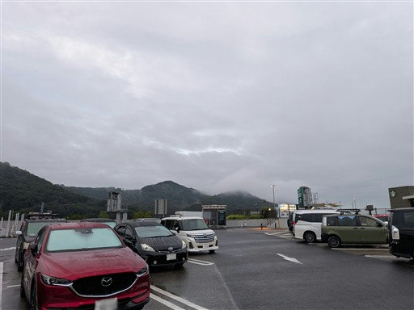
順調に能代に到着し、高速道路を下りたらMeat Factoryで昼食。
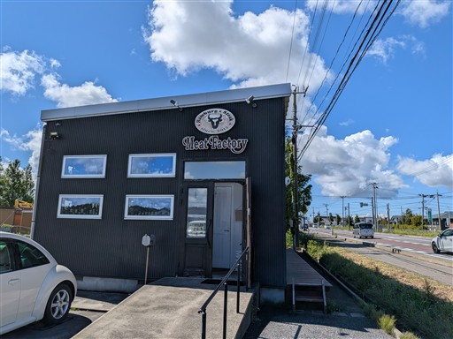
こんな構造物が並んでいる。冬の風雪除けだろう。
風力発電所が並んでいるのも特徴的な景観だ。
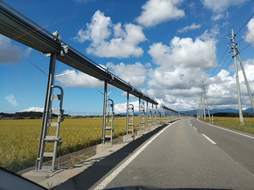
パン屋に寄って明日の朝食のパンを買う。
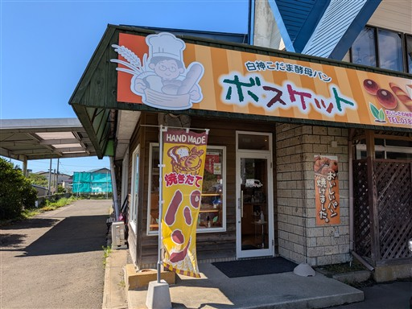
本日は移動日で山には登らないので観光のみ。
有名な観光地・十二湖を訪れる。
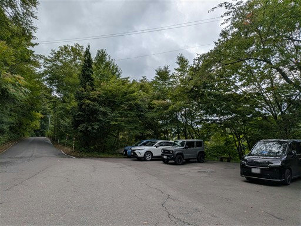
ビジターセンターの駐車場そばにある越口の池。
あまり下調べができておらず、どこを歩くか迷う。
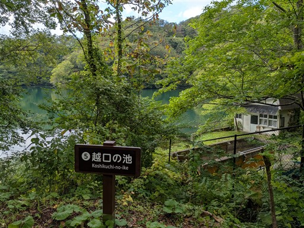
落口の池。こちらはすっきりと見渡せる。
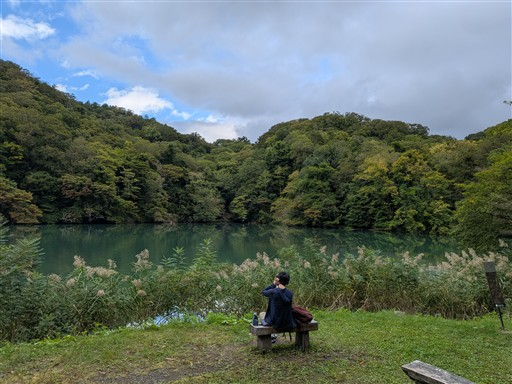
水が注ぎこんでいる。池と池の間は川が結んでいる。
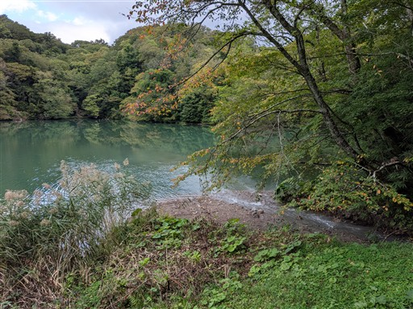
ひとまず有名なスポットである青池に向かう。
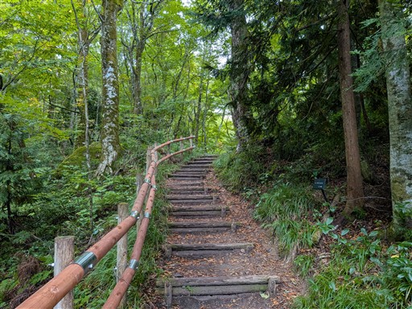
沸壺の池。透明度が高くとても美しい池だ。
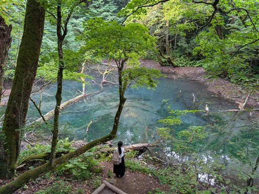
道は非常によく整備されている。歩いている観光客は結構多い。
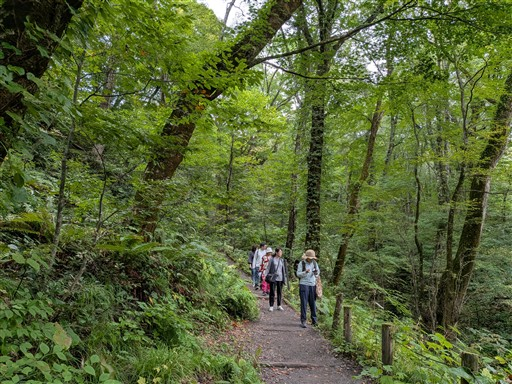
ブナ自然林の標識が近くにある。
この辺りはブナで有名な白神山地に属している。
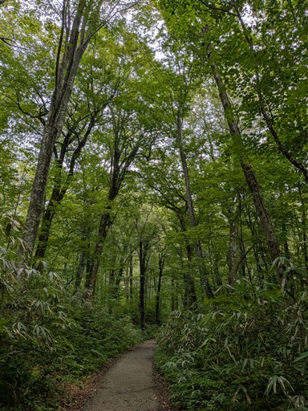
青池に到着。落葉が水面を覆っていて全く青くない。
これにはがっかり。
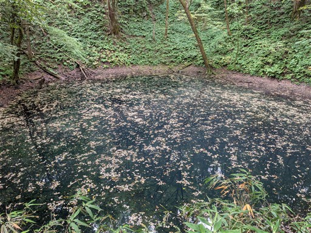
この辺りの周回だけでは物足りないので、南の金山の池方面に向かう。
途端に道が細くなる。
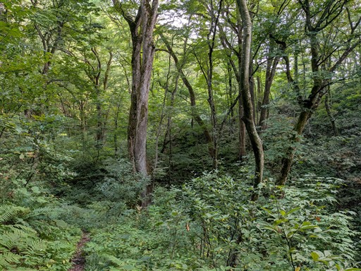
金山の池に到着。背後に崩山の大崩が見えている。
水面は波がなく鏡のようだ。
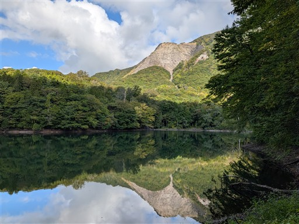
休憩舎があり、おやつを食べようと思ったが、蚊がいるので退散。
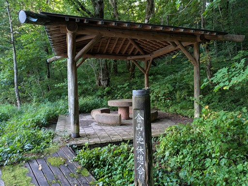
池の縁を歩いていく。
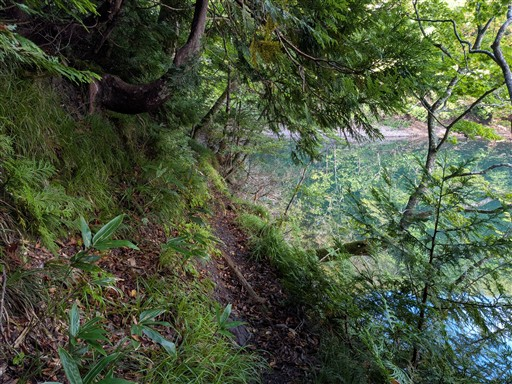
トチの実がたくさん落ちている。11年前の青森旅行でもよく見かけた。
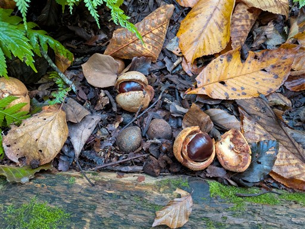
糸畑の池に到着。大きな池だが、きれいに見渡せるスポットがない。
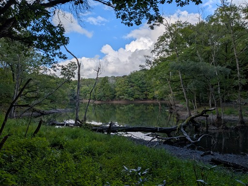
リフレッシュ村に到着。
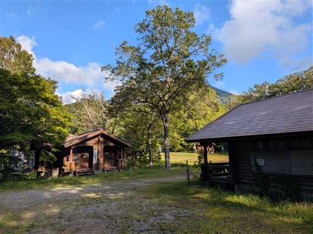
立派な施設だが、2022年の豪雨の影響で道路が崩壊し、残念ながら休業中だ。
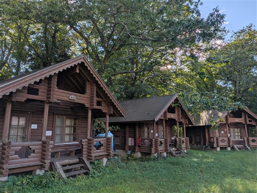
子宝の池。命名の由来は謎だ。
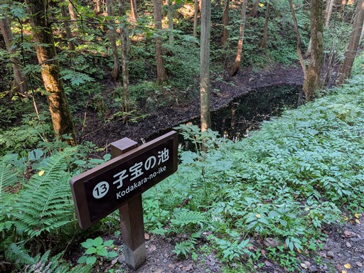
長池に到着。とにかく細長い池だ。
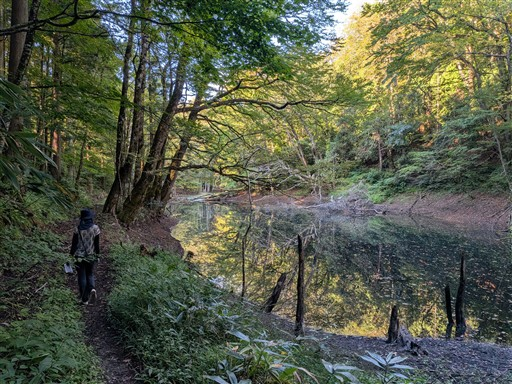
こちらの水面も穏やか。ずっと鏡の側を歩いているような感覚になる。
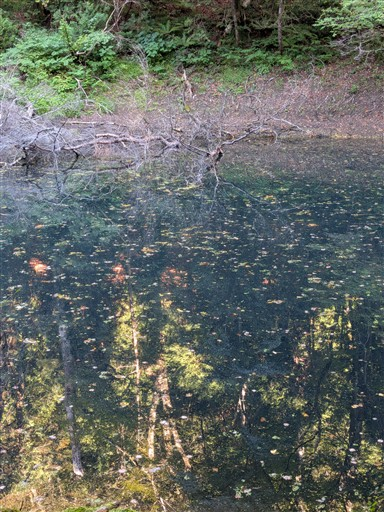
ブナの森が広がる。
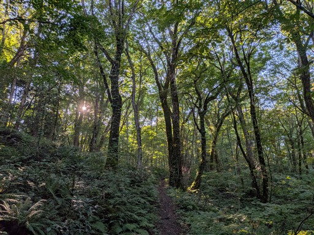
ビジターセンターに戻ってくる。
十二湖は美しい湖が並んでいたが、青池が落葉で埋まっていたのは残念だった。
南の方まで足を伸ばしたが絶景とまでは言えず、最初の方に訪れた沸壺の池が一番美しかった。
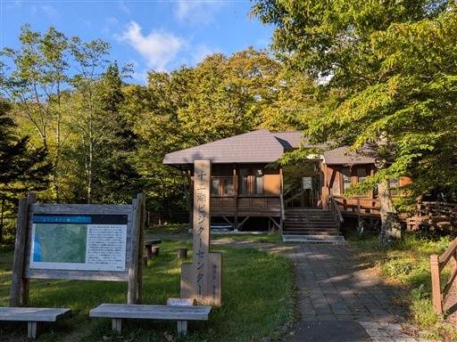
最後に日本キャニオン展望所に立ち寄る。
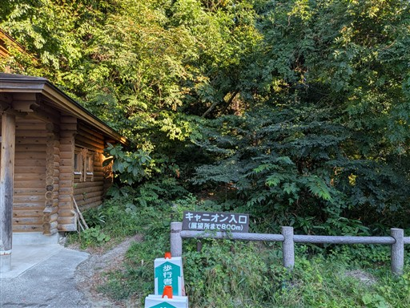
展望所から眺める日本キャニオン。白い岩肌は凝灰岩とのこと。
カメラマンがカメラを構えている。確かに夕陽を浴びると美しく光りそうだ。
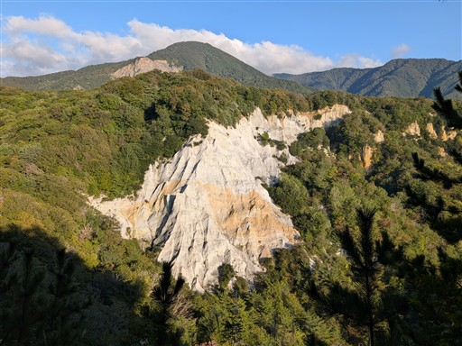
観光を終えたら不老不死温泉に行く。
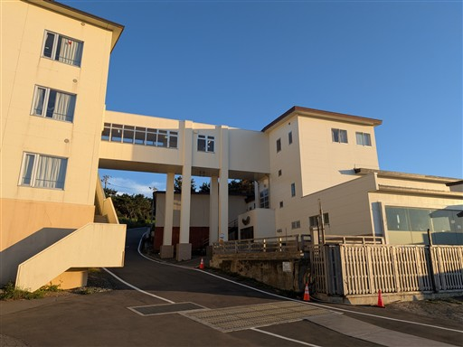
かなり眺めの良い温泉。露天風呂はもう終了と言われる。
宿泊客を優先しているのだろう。
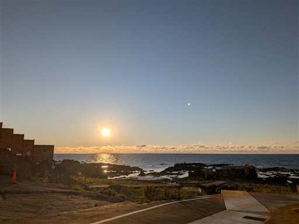
風呂から出たらちょうど日が沈むタイミング。あと1分早く出ればよかった。
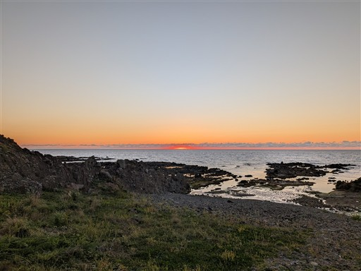
日が沈んだので露天風呂に入っていた人達も帰ってくる。
まさに絶景の露天風呂だ。
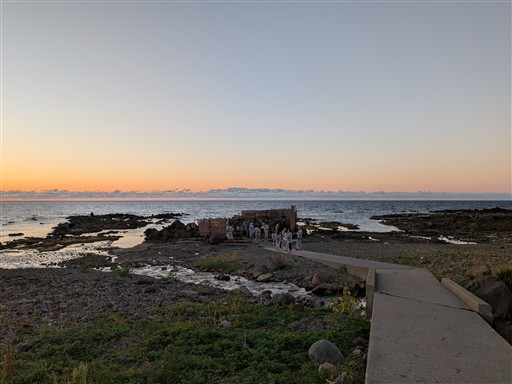
深浦の町に移動して「広〆」で夕食をとる。
この辺りは夜にやっている店が極端に少ない。
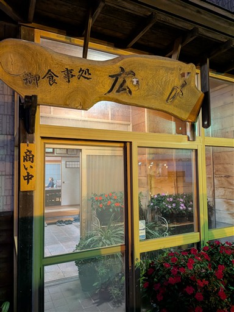